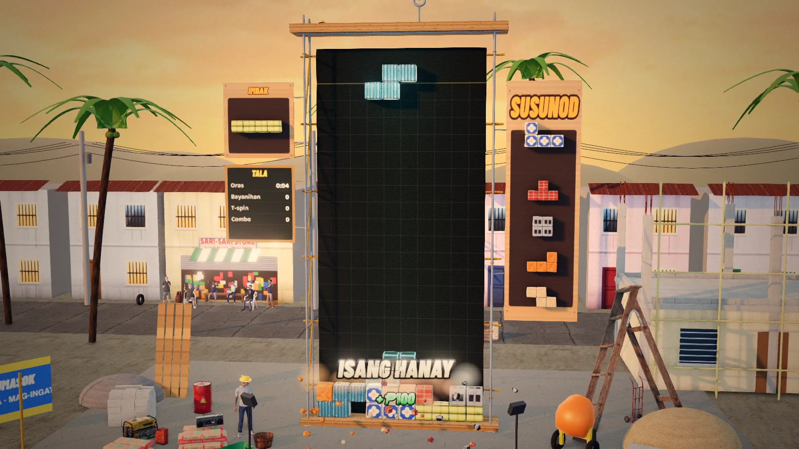

Hollow Blocks
The falling-block classic, Pinoy style

PuzzleKeyboard · TouchFree, in the browser
Play Hollow BlocksAbout the game
Hollow Blocks takes the falling-block puzzle everyone knows and drops it onto a small building site in a barangay at golden hour. The pieces are real materials: kawayan (bamboo), grey concrete hollow blocks, ladrilyo (red brick), yero (corrugated iron), plywood, baldosa (floor tile) and adobe stone. Each row you clear raises the house next door a little higher, and the foreman, Kapatas, stands by the well to cheer your good moves and grumble at your bad ones.
The game is written in Filipino with a full English translation you can switch to in the settings. Your score is your kita (earnings), counted in pesos.
How to play
Pieces made of four blocks fall one at a time. Move and turn each one so it lands where you want. A row filled all the way across clears, and everything above drops down. If the pile reaches the top, the game ends. A faint ghost shows where the falling piece will land, the next pieces are lined up beside the well, and you can tuck one piece into the hold slot to use later.
Clearing one, two, three or four rows at once pays more each time, multiplied by your level. Four at once is called a Bayanihan, and the neighbors carry a house across the screen to celebrate. Spinning the T-shaped piece into a tight slot (a T-spin), clearing on several pieces in a row (a combo) and emptying the whole well also pay extra.
- Keyboard: left and right arrows move, down drops gently, Space drops hard, up or X turns clockwise and Z turns back, C or Shift holds, P pauses, M mutes. Every key can be remapped.
- Phone and tablet: tap to turn, drag sideways to move, drag down to drop gently, flick down to drop hard, flick up to hold. There are also on-screen buttons.
- Game controller: the D-pad or stick moves, up drops hard, Cross or A turns, Circle or B turns back, Triangle, Y or a shoulder button holds.
Bahay (house) is the main endless mode: every ten rows is a new floor, a little faster, and every fifth floor finishes a house for your collection. Klasiko is one steady speed. Deadline is forty rows against the clock. In Bagyo (typhoon), mud rises from below. Karera is a two-minute race for the most kita. The Daily gives everyone the same pieces. Proyekto is a set of thirty contracts with twists like earthquakes and power cuts. Laban pits you against a computer rival, and Tapatan is two players on one machine.
Tips
- Keep the stack flat. Tall towers and deep, narrow pits leave the next piece nowhere to go.
- Build on nine columns and leave the tenth empty. When the long straight piece comes, drop it in for a Bayanihan.
- Use the hold slot. If the falling piece does not fit, swap it out, and keep a long piece in reserve for your open column.
- Once a piece is lined up, hard drop it. On high floors the speed gets serious, and every saved second helps.
- In Bagyo, dig down through the gaps in the mud rows and keep your own stack low so the mud has room to rise.
Hollow blocks and bayanihan
In almost any Philippine town you will see grey concrete hollow blocks, stacked at the roadside or half-built into a wall. They are cheap, sturdy and easy to lay, and a great many Filipino homes are built from them. Houses often grow slowly. A family puts up the ground floor, moves in, and adds the next floor years later when money allows, so unfinished upper storeys are a normal part of the skyline. The game's house rising floor by floor is that same story sped up.
Bayanihan is an older picture. In the countryside, when a family needed to move their bahay kubo, a light house of bamboo and nipa palm, neighbors would slide long poles underneath and carry the whole house on their shoulders to its new spot, and the family would often thank them with a meal. Today the word stands for community spirit in general. A four-row clear, everyone lifting together, seemed the right moment to borrow the name.
Other words in the game come from the site too. Kapatas is the foreman who keeps the crew in line, and bagyo and lindol (earthquake) are hazards any Filipino builder has to plan for.